The bridge between people with a work in their hands and the resources, skills and friends that work needs.
Every town already has its builders. We exist so that none of them have to build alone.
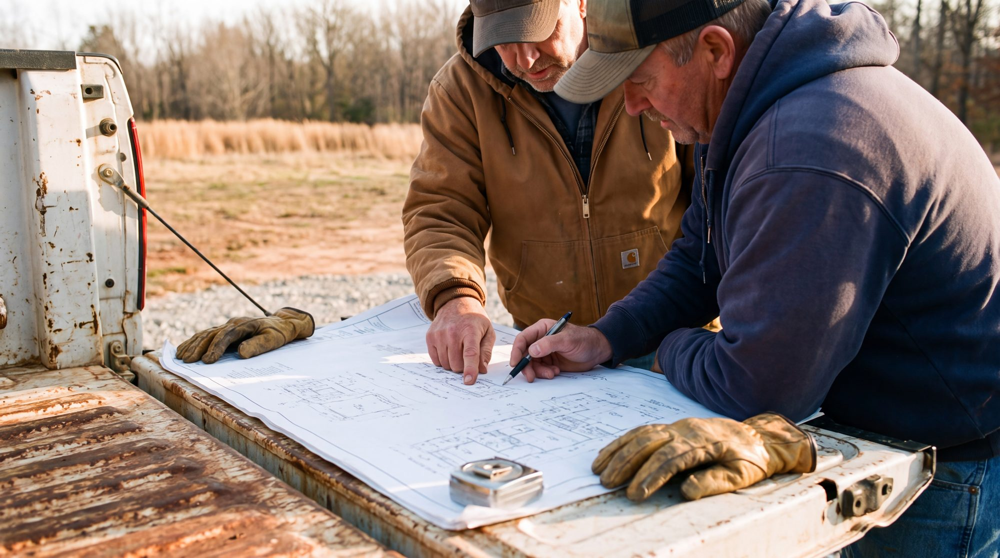
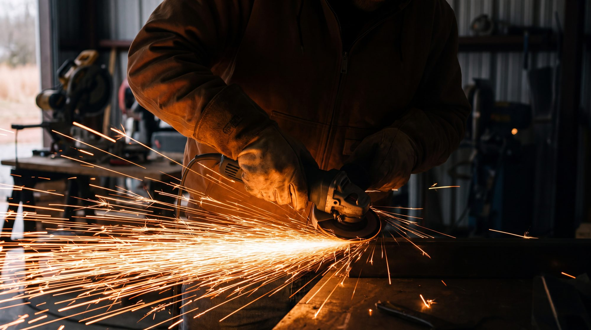

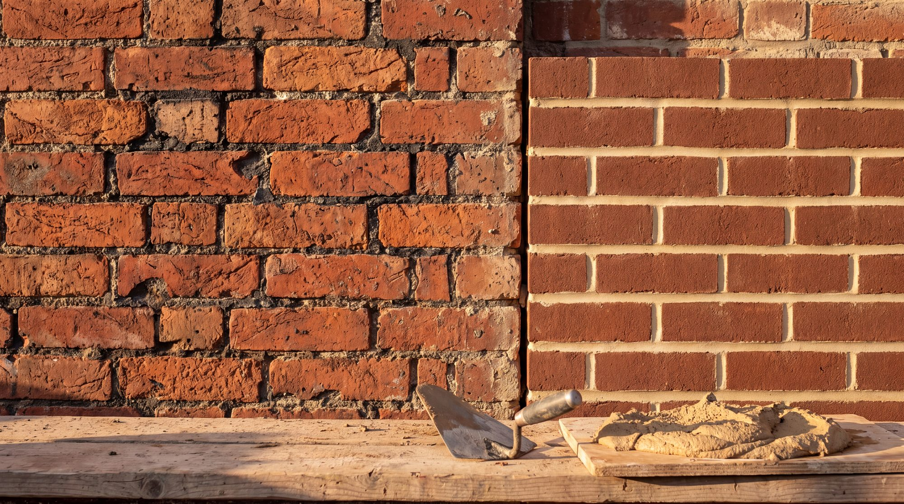

Every town has people already doing the work. We look for them, not for markets.
Skills, tools, counsel and stubborn friendship — for as long as the work needs it.
Small equipping stations change a town's culture. Institutions mostly change their org charts.

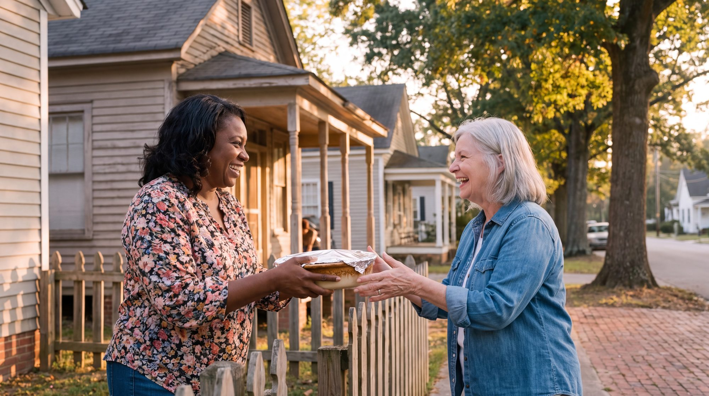

Isaiah 61 — rebuild the ruined places, and do it by raising up the people who live there. That is Shiloh Collective, across the field in Dawsonville.
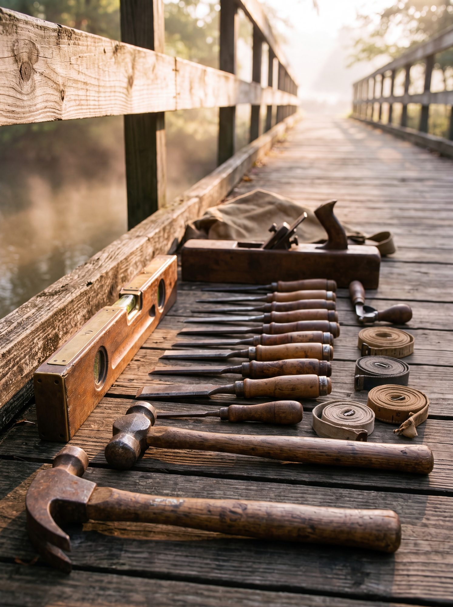
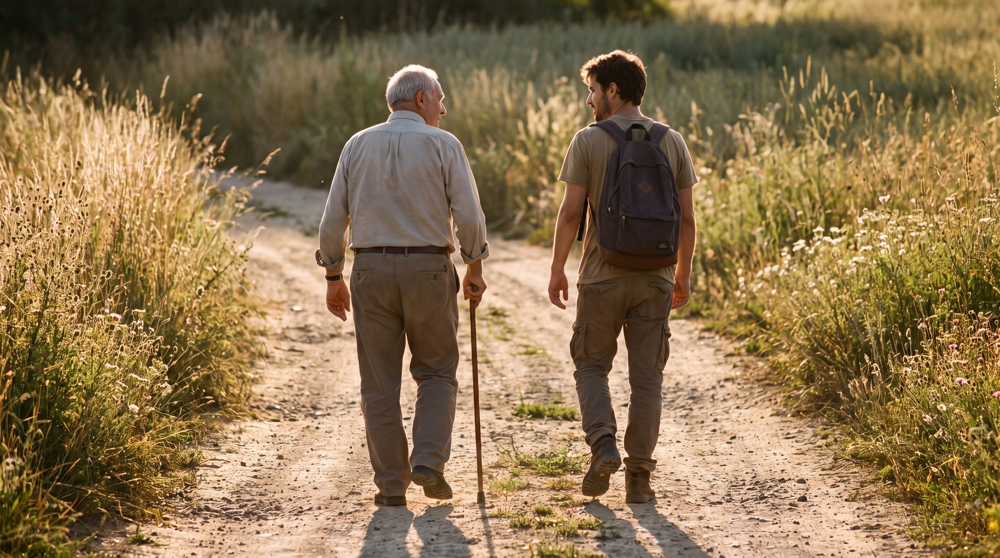
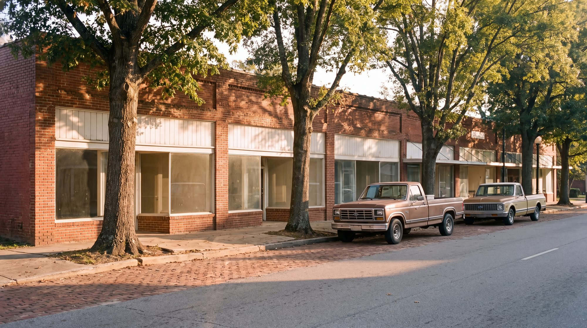
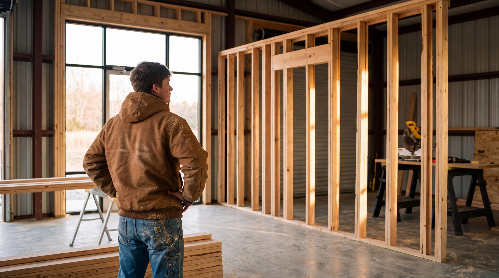
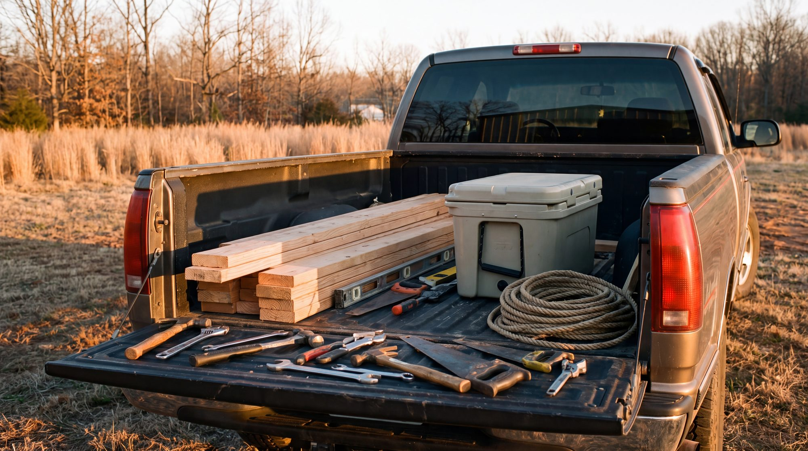
An equipping centre for young adults, built by hand inside a 2,800 square foot warehouse. i61 does not run it — we come alongside the people who do.
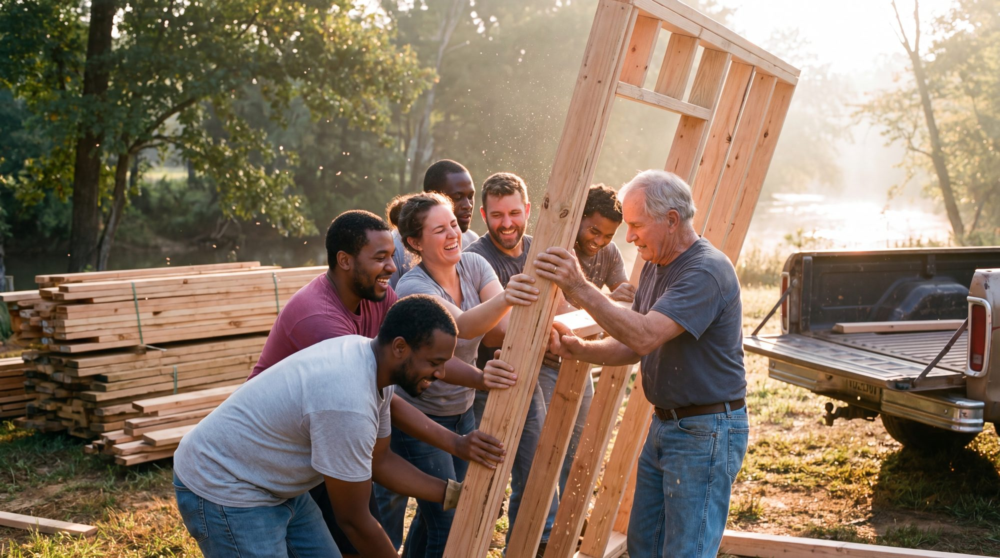
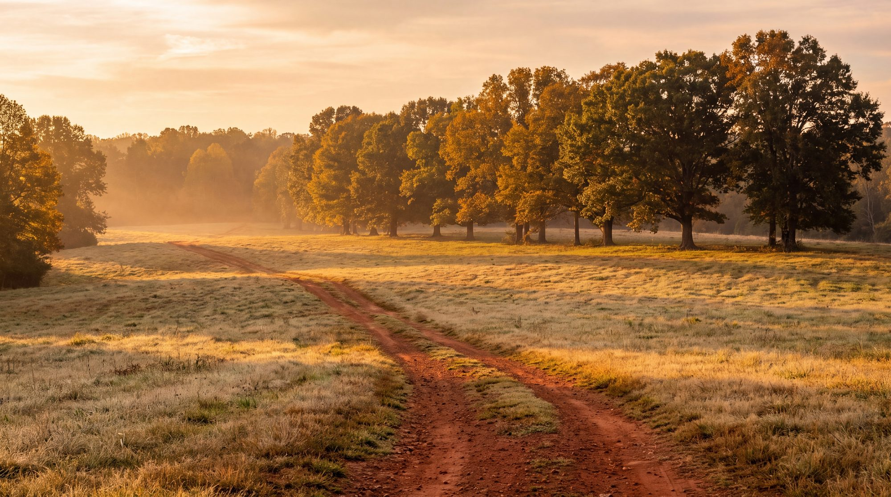
One equipping station at a time, in the towns that already have someone building.
A stranger should feel expected.
We build like people who were handed something.
What we help build belongs to its town.

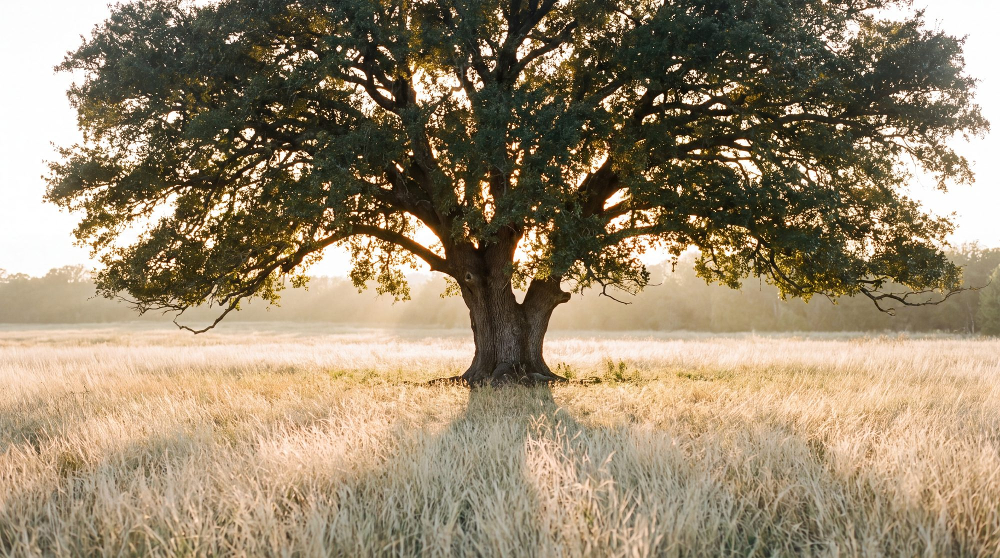

An equipping centre for young adults in Dawsonville, Georgia, built by hand inside a 2,800 square foot warehouse.
Visit Shiloh Collective →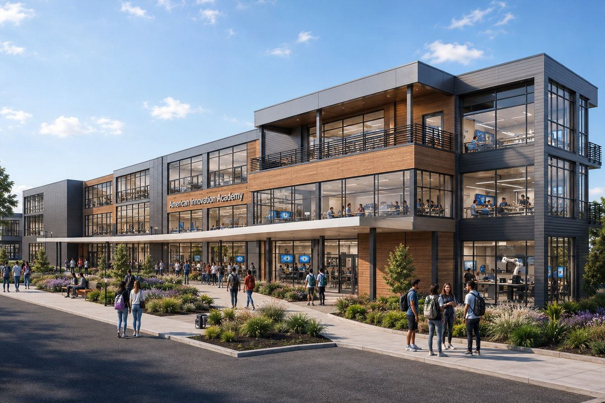
A public charter school taking shape in Woodruff, South Carolina — trades, labs and a movement lab under one roof.
Visit AIA ↗︎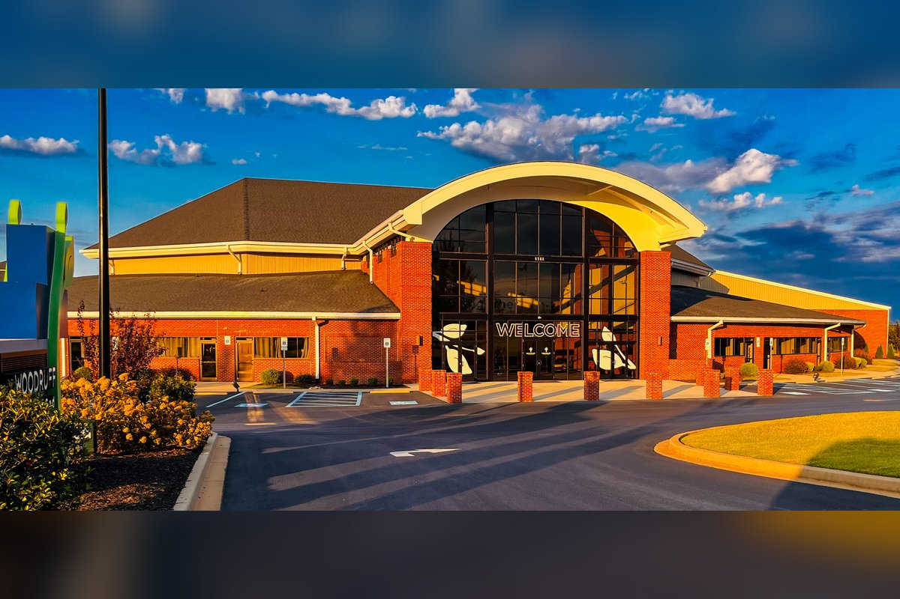
The Woodruff congregation whose campus the academy is being built on.
Visit the Church ↗︎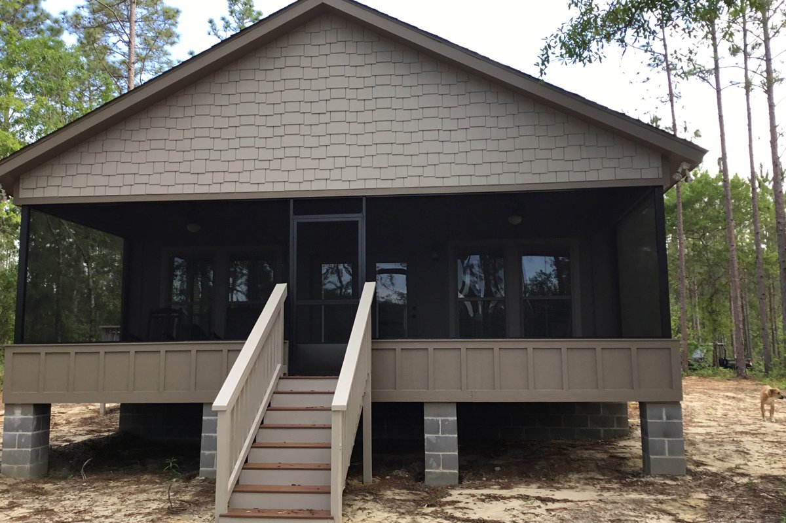
A quiet place in the pines for pastors and their spouses to rest.
Visit Still Water ↗︎ Project i61
Project i61